밤 10시 전에 서둘러 녹음한 데모를 매달 혼자 올리던 싱어송라이터 한겨울에게, 뮤직비디오 감독 박현이 노크한다. 이유는 그녀가 다시 부르려던 1분 12초의 숨이다. 첫 싱글을 영상까지 완성하기로 한 겨울은 모집 글과 셔플로 커버 디자이너 서유진과 프로듀서 윤태오를 찾는다. 그러나 두 방 사이에서 버전을 혼자 나르다 같은 숨이 서로 다른 자리에 놓이자, 모두를 한 팀으로 묶고 그 숨을 남긴 채 노래를 끝까지 완성한다.
이야기가 시험할 문장내가 지우려던 부분을, 누군가는 같이 만들 이유로 듣는다. 노크를 받아 본 사람은 다음엔 먼저 두드린다.
완성의 기준첫 싱글 〈남산을 한 바퀴 더〉의 음원·커버·뮤직비디오를 C8에 공개하는 데까지.
앱 화면 기준11월 2일 업데이트. 탭은 Discovery·클럽·Chatty·My, 클럽은 오픈채팅·프로젝트·팀.
10시 전에 급히 부르다 생긴 그 숨을 겨울은 지우려 하고, 박현은 그 때문에 연락하고, 유진은 그 메모를 커버로 삼고, 태오는 그 앞 한 마디를 비워 지키고, 뮤직비디오는 그 순간 얼굴로 다가가요.
큰 흐름
받은 노크(1) → 석 달 전, 혼자(2~3) → 듣고 있던 사람(4) → 노크의 이유(5) → 모집하고, 먼저 두드리기(6~7) → 두 개의 방(8) → 한 팀(9) → 끊지 않은 3분 12초와 네 사람의 이름(10) → 여운·답·방점(11~13)
전환점(노크, 모집, 셔플, 팀)은 C8 안에서 일어나요. 녹음과 촬영은 앱 밖이에요. 숨은 데모의 1:12에서 완성곡의 1:36으로 옮겨 가요.
인물
한 곡이 네 사람을 잇고, 끝엔 각자의 대표작으로 남아요
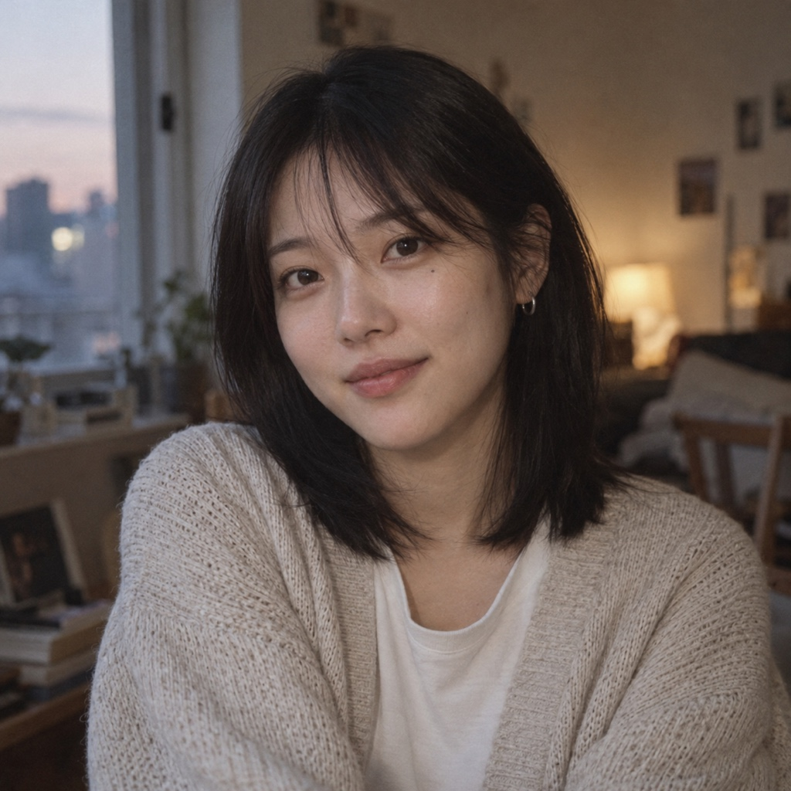
주인공
한겨울 28 · 싱어송라이터
밤 10시 전까지만 노래하는 사람
"기타 한 대로 쓰고 부르는 싱어송라이터예요. 집에서 데모를 만들고, 가끔 합정에서 노래해요."
원함
첫 싱글 〈남산을 한 바퀴 더〉를 데모가 아니라 완성곡으로, 뮤직비디오까지 붙여 내놓기.
필요
지우려던 걸 남겨 두기. 받기만 하던 사람에서 먼저 두드리는 사람으로, 혼자 나르던 사람에서 한 방에 모으는 사람으로.
습관
매달 둘째 주 목요일 밤에 하나씩 올려요. 윗집 때문에 밤 10시 전에 녹음을 끝내고, 벽에 이불 두 장을 걸어요.
이 곡의 몫
Lyrics & Composed · Vocal
@gyeoul.demo · 서울 마포구 · #홈레코딩#어쿠스틱#작사작곡 · 노크 환영
노크를 보낸 사람
박현 35 · 뮤직비디오 감독
끊지 않고 오래 따라가는 사람
"걷는 사람을 끊지 않고 따라가는 뮤직비디오를 찍습니다. 평일엔 브랜드 필름을 만듭니다."
원함
걸어가는 사람을 한 번도 끊지 않고 따라가는 원 테이크 뮤직비디오 한 편. 맞는 곡을 찾고 있어요.
필요
듣던 사람에서 말 거는 사람으로 가는 한 번의 선택.
습관
곡을 반복해 들으며 출력한 가사 옆에 연필로 컷 위치와 시각을 적어요. 말수가 적고, 리스펙트는 여덟 개를 다 골라요.
이 곡의 몫
Music Video Directed & Edited
@hyun.longtake · 서울 용산구 · #롱테이크#뮤직비디오#브랜드필름 · 노크 환영
먼저 두드린 상대
윤태오 32 · 프로듀서
목소리 자리부터 비워 두는 사람
"광고·웹드라마 음악을 만들어요. 목소리가 먼저인 곡을 좋아해요."
원함
의뢰 사이에 목소리가 먼저인 곡을 처음부터 같이 만들기. Arranged by에 이름이 남는, 의뢰 아닌 곡 한 곡.
필요
자기 조건(숨 앞 한 마디 비우기)을 지키면서 같이 만들기.
습관
파일을 보낼 때 "이번 파일에서 들어 주실 부분"을 한두 줄 적어요. 숫자로 말해요.
이 곡의 몫
Arranged
@taeo.track · 서울 마포구 · #편곡#OST#트랙메이킹 · 노크 환영
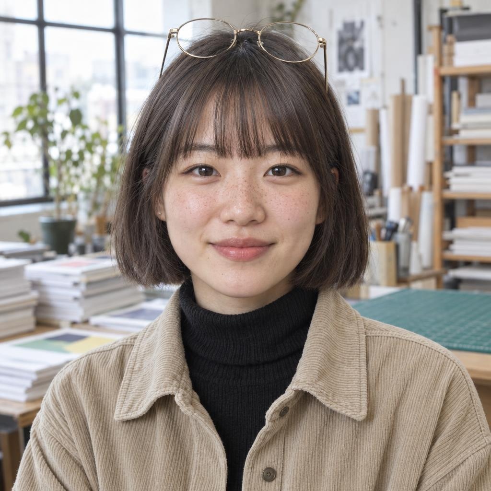
모집 글에 지원한 사람
서유진 25 · 그래픽 디자이너
썸네일에서도 읽히는 커버를 만드는 사람
"공연 포스터와 굿즈를 만들어요. 작은 썸네일에서도 읽히는 글자를 좋아해요."
원함
정식 싱글 커버 크레딧 하나. 흔한 야경 사진 대신 곡을 만든 사람의 흔적이 보이는 커버.
필요
음악 커버는 이번이 처음이라, 첫 크레딧을 걸 곡.
습관
음원과 가사에서 단어 세 개를 뽑아 사진·색·서체 방향을 잡아요. 시안을 썸네일 크기로 줄여 놓고 봐요.
이 곡의 몫
Artwork
@yujin.cover · 서울 은평구 · #앨범커버#포스터#타이포 · 노크 환영
한겨울 → 박현: 끝까지 들어 준 사람을 실망시키고 싶지 않다.
박현 → 한겨울: 그 숨을 끊지 않고 찍고 싶다. 그러려면 확정된 길이가 필요하다.
한겨울 → 윤태오: 노래는 바꿔도 목소리는 남겨 달라.
윤태오 → 한겨울: 숨 앞 한 마디만 비우게 해 달라.
한겨울 → 서유진: 곡을 과장하지 않는 커버.
서유진 → 한겨울: 지우지 말고 그 종이를 그대로 달라.
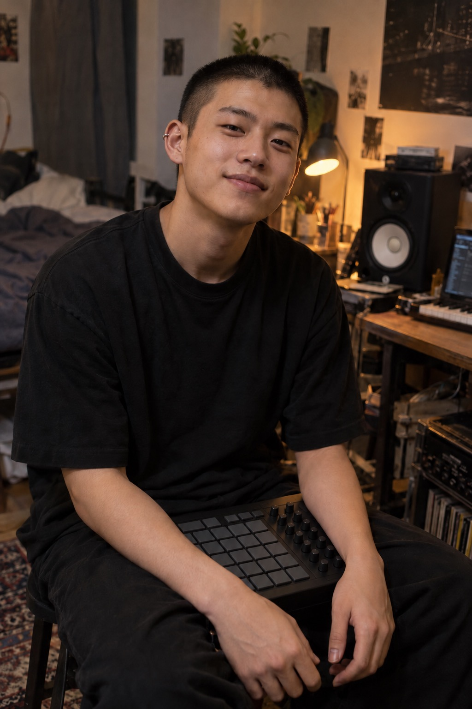
이로운비트메이커
정다올탑라이너
문석진세션 기타리스트
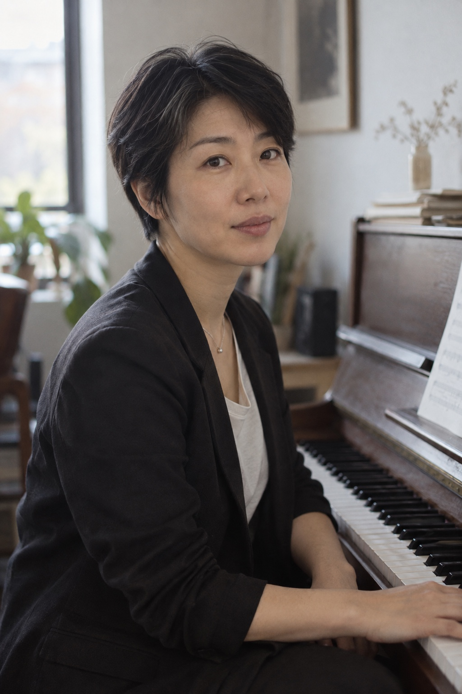
백하윤영화음악 작곡가
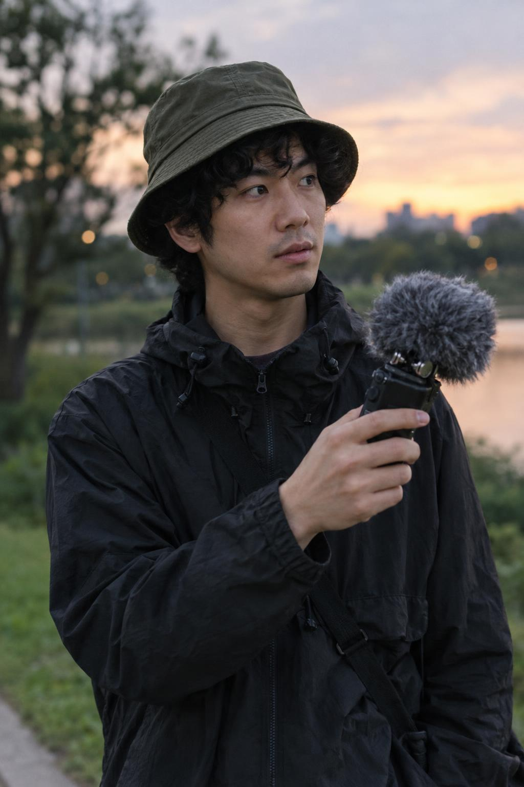
오지후사운드 디자이너
오픈채팅의 '옷장보컬'·'이불두장'은 닉네임과 이니셜 얼굴로만 나와요. 옷장보컬은 그 숨을 처음 좋다고 말한 사람이에요.
타임라인
6월의 목요일 밤에서 다음 달 둘째 주 목요일까지
날짜·시각
일
장면
6/11(목) 21:52
영감 한 줄, 기타 데모 v01 올림(전체공개)
2장
6/11(목) 22:18~22:31
오픈채팅 입장·질문. 박현이 겨울 프로필을 보고 팔로우(알림 켜짐)
3장
7/9(목)
〈막차를 한 번 미루고〉 데모 → 박현에게 알림 1
4장
8/13(목)
v03(2절) → 알림 2
4장
9/10(목) 21:30
합정 라이브 클립 → 알림 3
4장
9/10(목) 21:52
박현의 리스펙트 여덟 마디, GOAT
4장
9/10(목) 22:06
박현의 노크. 22:08 겨울이 열어 보고 답하지 못함
1·5장
9/11(금) 07:12
출근길에 받아주기, 대화
5장
9/11(금) 21:40
프로젝트 모집 글
6장
9/12(토) 14:10
유진이 '앨범 커버'로 검색해 지원, 19:30 수락
6장
9/14(월) 15:40
프로듀서 0명 → 셔플 → 태오에게 첫 노크. 17:10 받아주기, 태오 지원·수락
7장
9/19(토)
태오 v04(3:12)와 박현 동선 테스트(2:48)가 엇갈림
8장
9/20(일) 02:10
두 방에 같은 문장 '곡 하나 끝날 때까지만, 우리 팀 해요. TF처럼요.'
8장
9/20(일) 13:00
팀 '남산 한 바퀴', 초대·수락, 3:12 고정, 숨 1:36 남기기
9장
9/27(일) 23:40
남산 산책로 촬영, 일곱 번째 테이크
10장
10/8(목)
둘째 주 목요일, 완성곡과 뮤직비디오 공개
10장
10/12~10/18
Weekly Best 주차
11장
다음 달 둘째 주 목요일 밤
다음 데모 업로드(앱 표기 '방금')
13장
크레딧: Lyrics & Composed by 한겨울 / Arranged by 윤태오 / Vocal by 한겨울 / Artwork by 서유진 / Music Video Directed & Edited by 박현
장면 카드
제목의 동사가 폰 안에서 시작 화면 → 행동 → 결과 화면으로 일어나요
01
똑똑 · 콜드 오픈
올려 둔 노래에 노크가 왔어요
어두운 장면 · 폰 한 대와 제목, 사진 없음 · 스크롤 200vh
첫 화면에서 '작업을 올려 두면, 그 작업에 끌린 사람이 먼저 말을 걸 수 있는 곳'이라는 쓰임과 이야기의 질문(누가, 왜 1분 12초를)을 함께 던져요.
홈 카피
소리 글자
똑똑
제목
올려 둔 노래에 / 노크가 왔어요
부제
작업을 올려 두면, 그 작업에 끌린 사람이 먼저 말을 걸어오기도 해요.
인용
"1분 12초, 기타가 멈추고 숨만 남는 부분이 오래 남았습니다." — 박현 · 뮤직비디오 감독
캡션
한겨울 · 싱어송라이터의 폰, 9월 10일 밤 10시 6분
이음 문구
석 달 전으로 돌아가 볼게요
인물 행동
없음. 화면은 받아주기 직전에서 멈춰요. 누르는 건 5장이에요.
감정 변화
고요 → 궁금
연출
'똑똑'이 두 번 짧게 흔들리고, 폰 안에 날짜 줄 → 박현의 소개 카드 → 파란 용건 말풍선 → 첫 메시지 순서로 노크가 도착해요.
폰 화면 순서 1컷
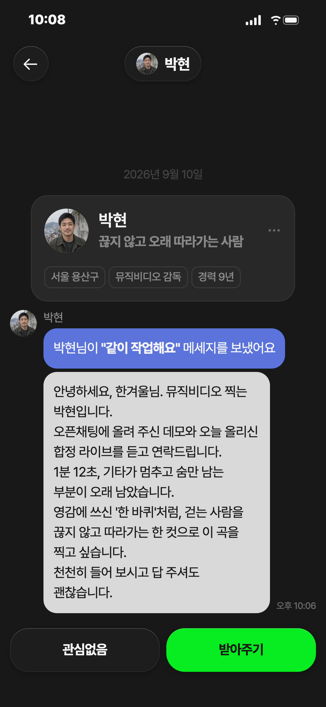
1 받은 노크 · 받아주기 직전한겨울의 폰
심는 것
P6같은 화면 1장의 받은 노크 → 5장에서 회수낯선 사람의 노크 → 들어 온 사람의 노크
P14올려 둔 → 올린 '올려 둔 노래에' → 13장에서 회수처음과 끝이 맞물림
회수하는 것
이 장면에서 회수하는 것은 없어요.
이어 가는 것P4 열어 둔 문
다음 장면으로받은 노크(받아주기 직전) → 석 달 전, 원룸 사진
02
올리기 · 오프닝 이미지 · 설정
완성될 때까지 기다리지 않았어요
밝은 장면 · 독립 사진 → 폰 한 대 고정 · 스크롤 사진 + 350vh
주인공의 생활(밤 10시 전에 끝나는 녹음)과 지금 방식(혼자, 꾸준히), 그리고 '완성 전 작업도 올리는 곳'이라는 쓰임을 보여요. 그 숨을 처음 심어요.
홈 카피
시간 표지
석 달 전, 6월 11일 목요일 밤 9시 52분
kicker
포트폴리오 · 영감
제목
완성될 때까지 / 기다리지 않았어요
부제
기타 한 대뿐인 데모는 오디오로, 떠오른 가사 한 줄은 영감으로 올렸어요.
보조
올릴 때마다 공개 범위는 내가 골라요.
속말
10시 전에 한 번만 더
CTA
앱에서 프로필 만들기
인물 행동
떠오른 가사 한 줄을 영감으로 올림 → 기타 데모를 포트폴리오의 오디오로 올림(설명에 '1분 12초 숨소리는 다음에 다시 녹음할게요', 전체공개) → 프로필 첫 칸에 데모가 생긴 걸 보고 노트북을 닫음.
감정 변화
조급(9시 52분) → 담담한 후련함
연출
사진이 여백 있는 카드에서 화면 가득 커지고, 폰은 영감 → 파일 고르기 → 제목 → 설명 → 프로필 순서로 바뀌어요. 옆에 데모 v01의 파형 띠(1:56, 1:12 자리에 숨 표식).
폰 없는 독립 사진 · 망원 원룸, 밤 9시 52분. 이불 두 장, 팝 필터를 단 마이크, 무릎 위 기타.
폰 화면 순서 6컷
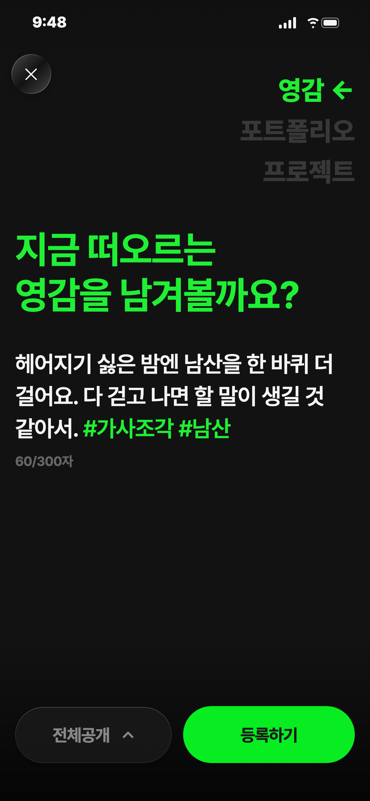
1 영감 한 줄 쓰기한겨울의 폰
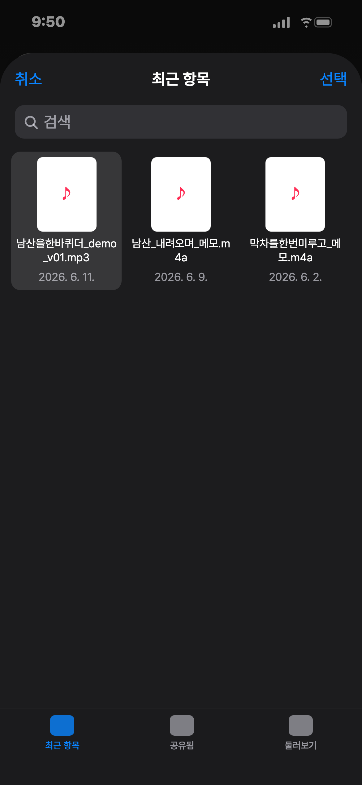
2 오디오 파일 고르기한겨울의 폰
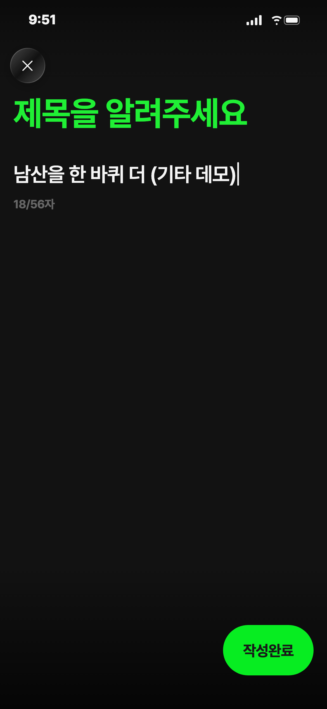
3 제목 쓰기한겨울의 폰
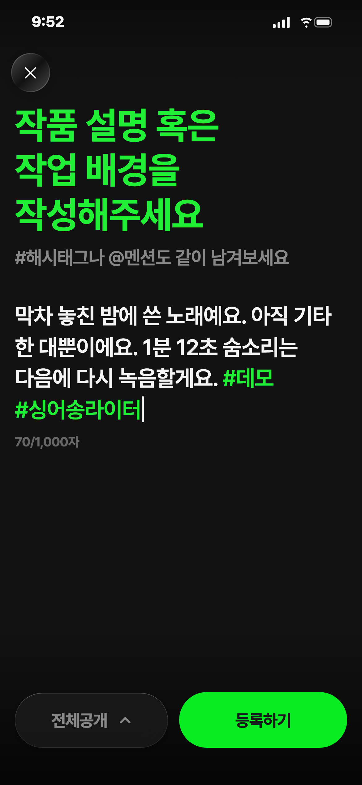
4 설명 · 전체공개한겨울의 폰
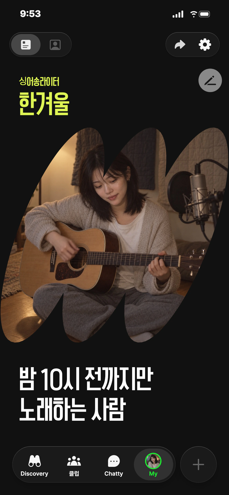
5 프로필 첫 화면한겨울의 폰
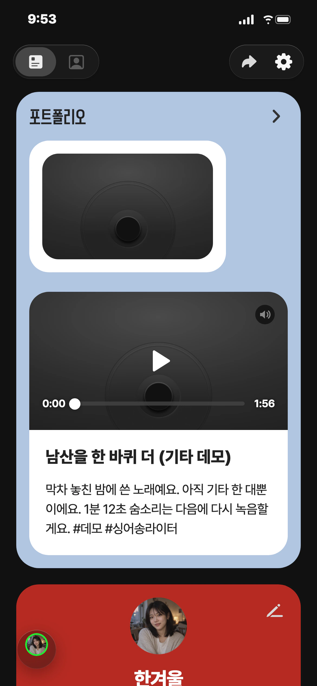
6 포트폴리오 첫 칸 · 기타 데모 1:56한겨울의 폰
심는 것
P1영감 한 줄의 한 바퀴 영감 '남산을 한 바퀴 더…' → 10장에서 회수혼잣말 → 촬영 계획 → 완성된 한 컷
P2밤 10시 '밤 10시 전까지만', 9시 52분의 녹음과 오픈채팅 질문 → 10, 13장에서 회수제약 → 팀이 노래를 방 밖으로 데리고 나감 → 그래도 그녀는 그녀
P3그 숨 가사 종이의 '1:12 다시', 옷장보컬의 칭찬과 '다시 녹음하려고요' → 9, 10, 13장에서 회수지우려던 흠 → 연락의 이유 → 넷의 공통 언어 → 작품의 얼굴 → 다음 곡의 출발점
P4열어 둔 문 프로필의 '노크 환영' → 12장에서 회수신경 쓴 적 없는 기본값 → 열려 있던 문 → 내가 고르는 문
P5공개 범위 올릴 때 고른 '전체공개' → 11장에서 회수작은 선택 → 발견 → 무대
P8곡 길이 v01 1:56, v03 2:48 → 8, 9, 10장에서 회수혼자 매기던 번호 → 넷이 합의한 길이
P12가사 종이 커버 없는 데모 썸네일 → 10, 11, 13장에서 회수빈 얼굴 → 고친 흔적으로 만든 얼굴
P13처음의 프로필 데모 한 칸, 리스펙트 0, 소속 팀 없음 → 13장에서 회수같은 화면, 달라진 한 장
P17목요일 습관 둘째 주 목요일의 업로드 → 10, 13장에서 회수혼자 하던 습관 → 첫 완성 → 같은 습관, 다른 처지
회수하는 것
이 장면에서 회수하는 것은 없어요.
다음 장면으로프로필 첫 칸의 데모 → 클럽 홈과 오픈채팅의 링크 카드
03
오픈채팅 · 설정 · 둘째 이야기의 씨앗
10시 넘어 못 부르는 사람 겨울만이 아니었어요
밝은 장면 · 폰 한 대, 이름표만 바뀜 · 스크롤 350vh
같은 고민을 가진 사람들이 모이는 곳과, 들어서는 순간 소개 카드가 뜨는 방식을 보여요. 박현을 말 대신 듣는 사람으로 심어요.
홈 카피
kicker
오픈채팅(구 라운지) · 팔로우
제목
10시 넘어 못 부르는 사람 / 겨울만이 아니었어요
부제
들어서는 순간 겨울의 소개 카드가 먼저 떴어요. 그 카드를 말없이 눌러 본 사람이 있었어요.
단계
마음에 드는 사람은 팔로우해 두면, 새 작업이 올라올 때 알림이 와요.
보조
박현 · 뮤직비디오 감독. 이 방에선 말보다 듣는 쪽이었어요.
인물 행동
겨울: 클럽 → 오픈채팅 '홈레코딩 하는 사람들' 입장(소개 카드 자동) → 10시 질문과 데모 링크 → 답을 받음. 박현(같은 방의 조용한 참여자): 겨울의 소개 카드를 눌러 프로필 → 데모 재생 → 데모 더보기에서 팔로우(알림 켜짐).
감정 변화
겨울 머쓱 → 웃음과 연대감 / 박현 무표정 → 멈춤
연출
폰 한 대 가운데. 앞 세 화면은 '한겨울의 폰', 뒤 네 화면은 '박현의 폰'으로 이름표만 바뀌어요. 같은 방을 두 사람이 다르게 본다는 게 이 장면의 반전이에요.
폰 화면 순서 7컷
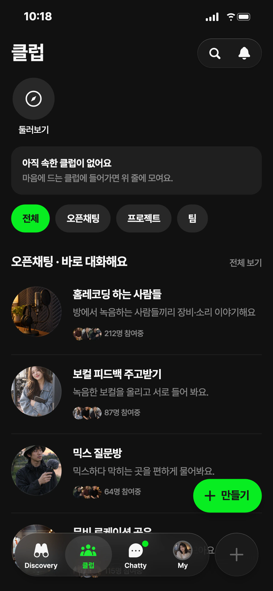
1 클럽 홈 · 오픈채팅한겨울의 폰
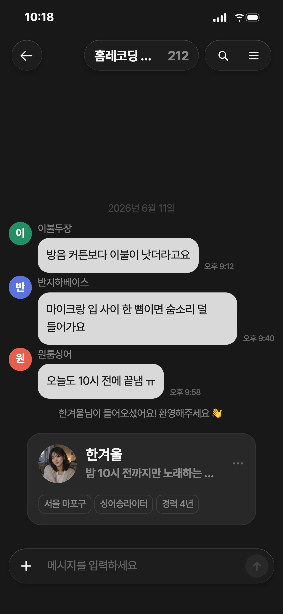
2 입장 · 소개 카드한겨울의 폰
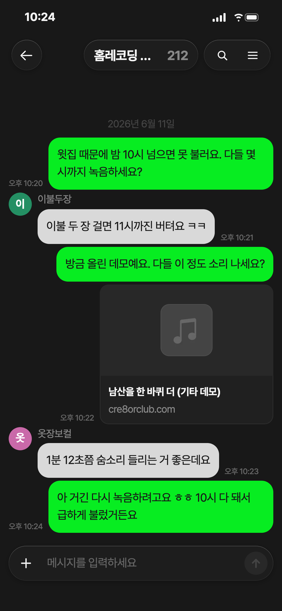
3 10시 질문과 데모 링크한겨울의 폰
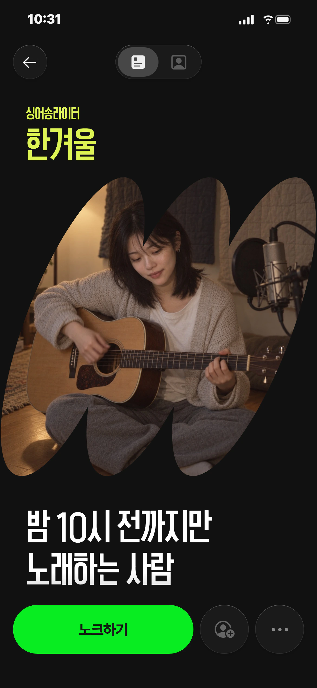
4 겨울의 프로필 열람박현의 폰
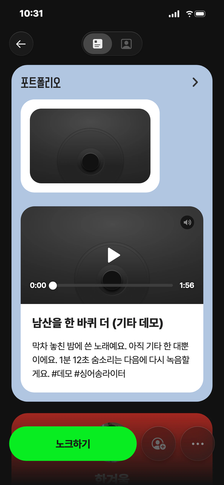
5 첫 칸의 기타 데모박현의 폰
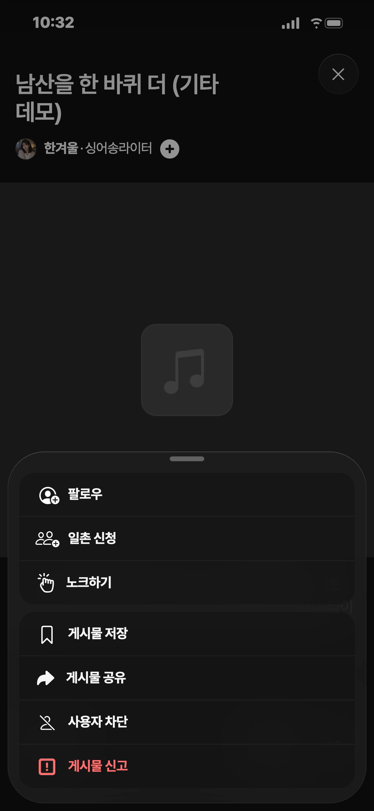
6 데모 더보기 · 팔로우박현의 폰
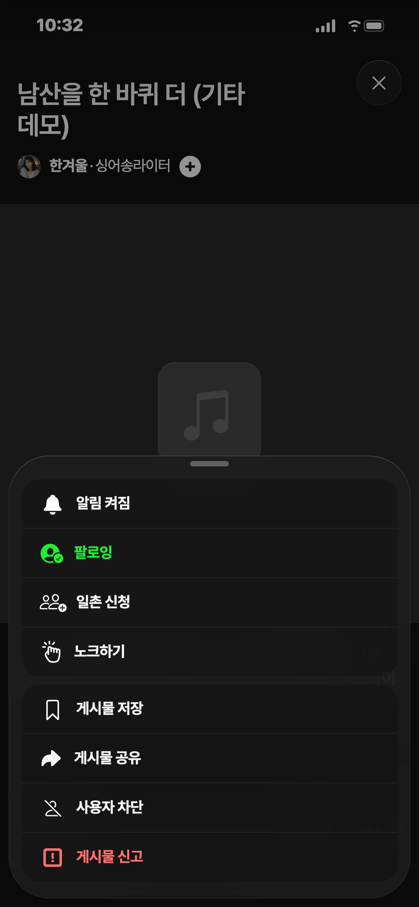
7 알림 켜짐 · 팔로잉박현의 폰
심는 것
P2밤 10시 '밤 10시 전까지만', 9시 52분의 녹음과 오픈채팅 질문 → 10, 13장에서 회수제약 → 팀이 노래를 방 밖으로 데리고 나감 → 그래도 그녀는 그녀
P3그 숨 가사 종이의 '1:12 다시', 옷장보컬의 칭찬과 '다시 녹음하려고요' → 9, 10, 13장에서 회수지우려던 흠 → 연락의 이유 → 넷의 공통 언어 → 작품의 얼굴 → 다음 곡의 출발점
P10말수 적은 사람 오픈채팅에서 말하지 않는 박현 → 9, 10장에서 회수듣던 사람 → 말 거는 사람 → 팀을 붙잡는 사람
P11소개 카드 오픈채팅에 뜬 겨울의 소개 카드 → 7장에서 회수나를 먼저 보여 주는 카드가 양쪽으로 오감
P18처음 알아본 사람 옷장보컬이 처음 그 숨을 좋다고 함 → 10장에서 회수흘려들은 칭찬 → 지킨 것을 알아봐 준 사람
회수하는 것
이 장면에서 회수하는 것은 없어요.
이어 가는 것P5 공개 범위
다음 장면으로'알림 켜짐 · 팔로잉' → 박현의 책상 사진과 소식 알림
04
리스펙트 · 촉발 직전
말수 적은 사람이 여덟 마디를 골랐어요
어두운 장면 · 독립 사진 → 큰 폰 한 대 고정 · 스크롤 사진 + 500vh
석 달의 꾸준함을 몽타주로 압축하고, 리스펙트가 '좋았던 이유를 골라 보내는 일'이라는 걸 앱 동작 그대로 보여요. 이 페이지에서 가장 볼 만한 순간이에요.
홈 카피
사진 캡션
박현 · 뮤직비디오 감독. 곡을 들으며 장면이 보이는 자리를 가사 옆에 적어요.
kicker
알림 · 리스펙트
제목
말수 적은 사람이 / 여덟 마디를 골랐어요
부제
좋았던 이유를 골라서 보내요. 새 곡이 올라올 때마다 듣기만 하던 박현이 처음 꺼낸 말이에요.
단계(몽타주)
팔로우하고 알림을 켜 두면, 새 작업이 올라올 때마다 소식이 와요.
단계(리스펙트 뒤)
보낸 리스펙트는 상대에게 알림으로 닿아요.
큰 날짜
7.9 → 8.13 → 9.10
인물 행동
박현: 알림이 올 때마다 듣는다(세 번) → 9월 10일 라이브 카드의 별 → 한마디 여덟 개를 아래에서 위로 다 고름 → 리스펙트. 겨울: 알림 확인.
감정 변화
박현 조용한 반복 → 터짐 / 겨울 무심 → '이 사람 누구지'
연출
큰 날짜가 7.9 → 8.13 → 9.10으로 바뀌고, 리스펙트 구간은 한마디가 아래에서 위로 칠해짐 → 보내기 → 별이 초록 8로 바뀌는 순간 GOAT가 박히고 꽃가루(녹화 f018과 같은 순서) → 고른 알약이 폰 화면 안에서만 쏟아짐 → 별 8과 GOAT가 남는 순서예요. 보내기 전 카드(별 0) 위에 GOAT가 보이는 프레임은 없어요.
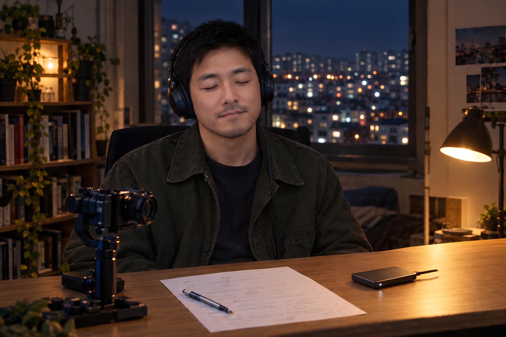
폰 없는 독립 사진 · 해방촌 옥탑 작업실의 밤. 헤드폰을 쓰고 눈을 감은 채 듣는 박현.
폰 화면 순서 11컷
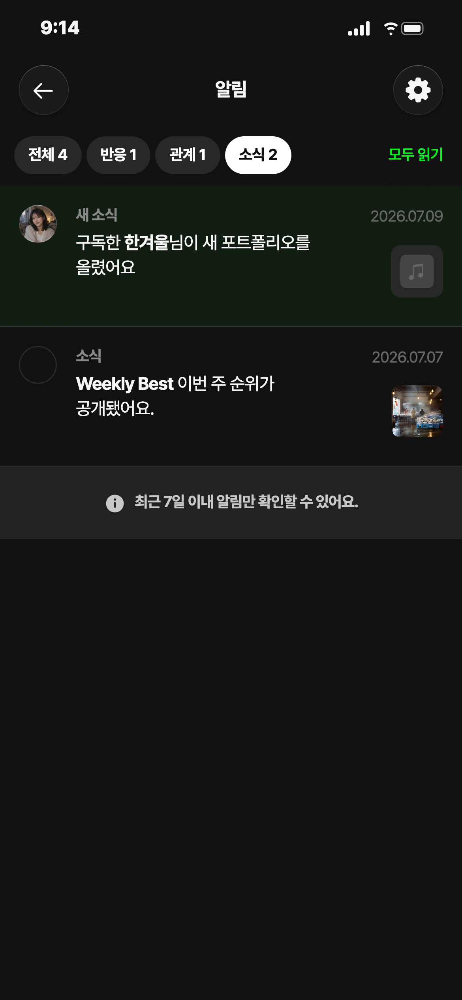
1 새 작업 알림 · 7월 9일박현의 폰
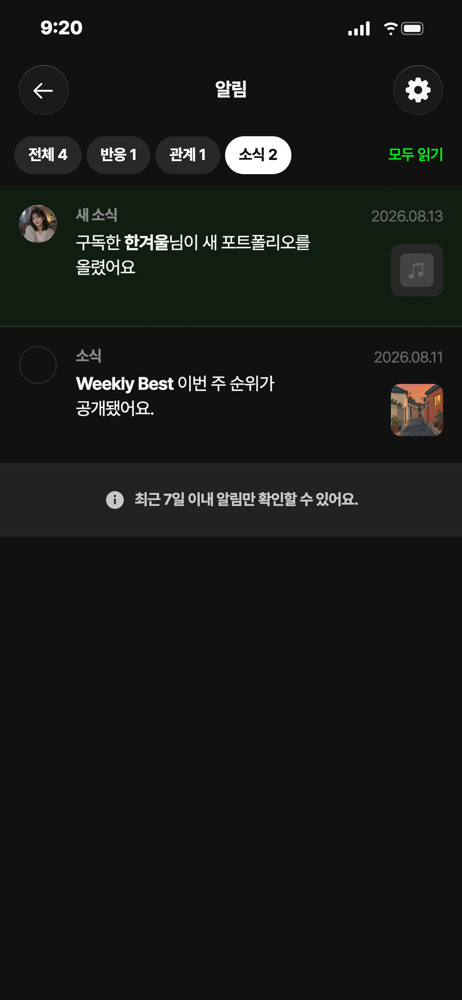
2 새 작업 알림 · 8월 13일박현의 폰
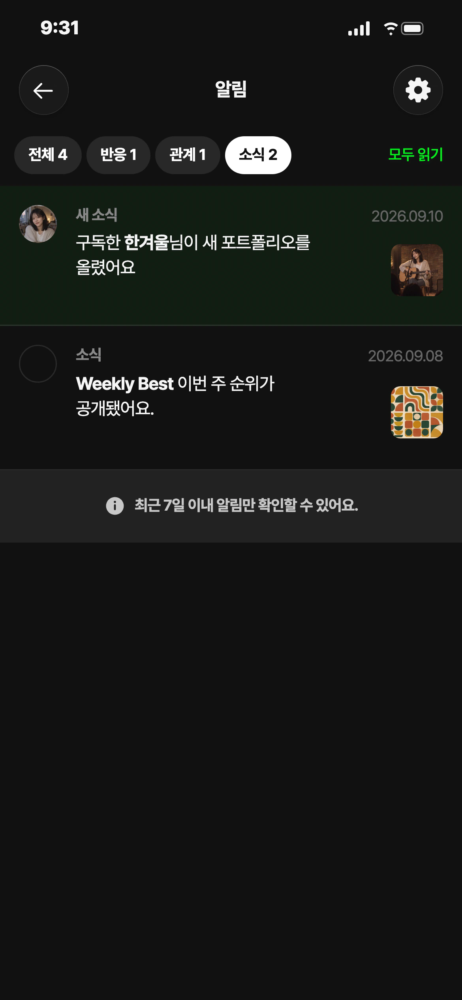
3 새 작업 알림 · 9월 10일박현의 폰
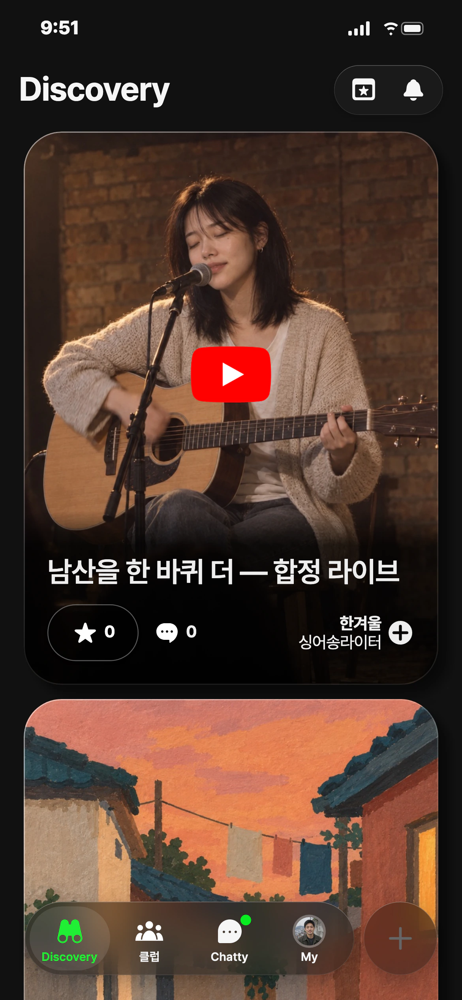
4 합정 라이브 카드 · 별 0박현의 폰
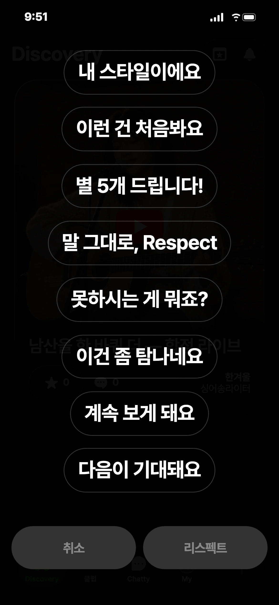
5 한마디 여덟 개박현의 폰
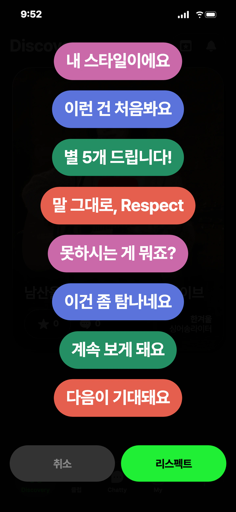
6 여덟 개 모두 고름박현의 폰
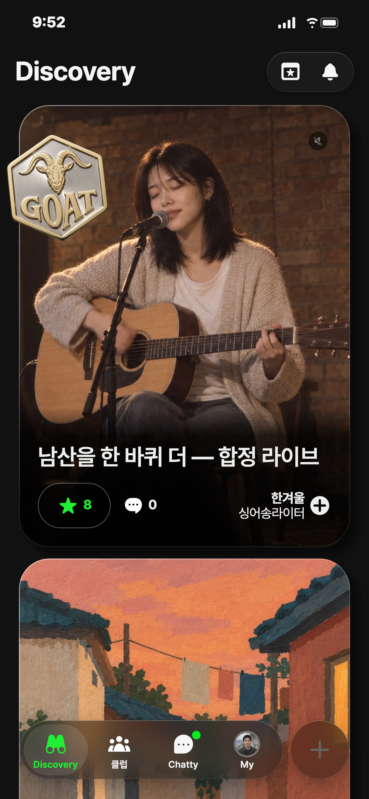
7 GOAT · 별 8박현의 폰
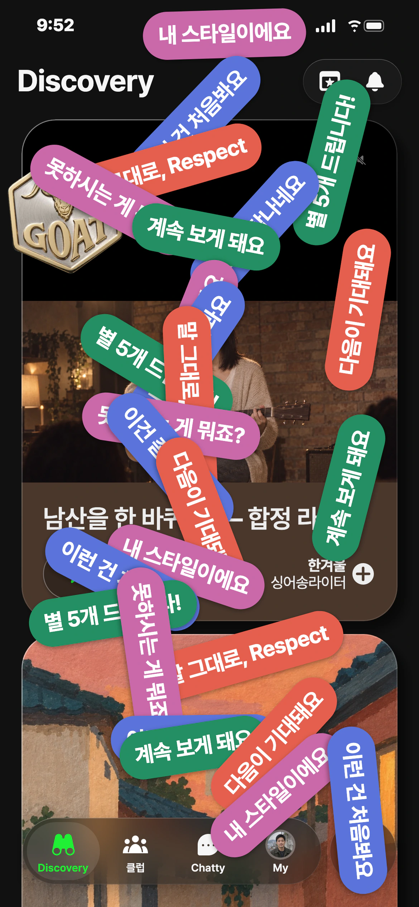
8 알약 비박현의 폰
9 결과 유지박현의 폰
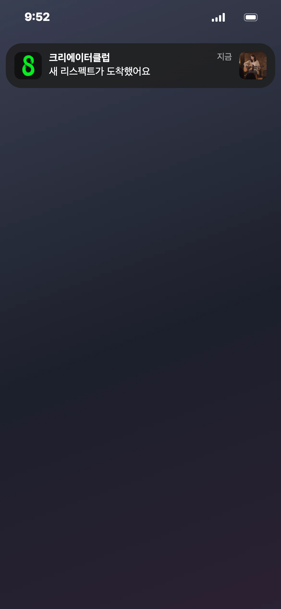
10 잠금 화면 알림한겨울의 폰
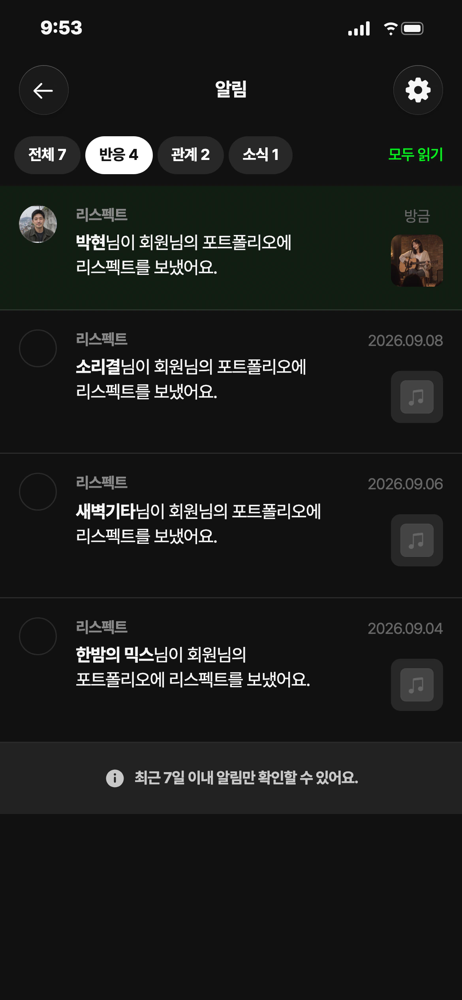
11 반응 탭 · 리스펙트 도착한겨울의 폰
심는 것
P8곡 길이 v01 1:56, v03 2:48 → 8, 9, 10장에서 회수혼자 매기던 번호 → 넷이 합의한 길이
P15리스펙트 한 사람의 리스펙트 여덟 마디 → 11장에서 회수한 사람의 응원 → 여러 사람의 응원
P17목요일 습관 둘째 주 목요일의 업로드 → 10, 13장에서 회수혼자 하던 습관 → 첫 완성 → 같은 습관, 다른 처지
회수하는 것
이 장면에서 회수하는 것은 없어요.
이어 가는 것P10 말수 적은 사람
다음 장면으로겨울의 반응 알림 '방금' → 같은 밤 10시 6분, 박현 폰의 겨울 프로필
05
노크 · 촉발 · 망설임 · 2막 진입
지우려던 숨 때문에 노크가 왔어요
밝은 장면 · 폰 두 대 나란히(보내는 폰, 받는 폰) · 스크롤 420vh
노크가 '용건을 고르고 첫 메시지를 보내면 소개 카드가 함께 가고, 받을지는 상대가 정하는' 방식이라는 걸 양쪽 화면으로 끝까지 보여요. 1장의 같은 화면이 '들어 온 사람의 노크'로 다시 읽혀요.
홈 카피
kicker
노크
제목
지우려던 숨 때문에 / 노크가 왔어요
부제
그날 밤 겨울은 답하지 못했어요. 다음 날 아침 출근길에 받아줬어요.
단계 1
하고 싶은 말만 골라요 — 용건 하나를 고르고 첫 메시지를 쓰면, 내 소개 카드가 같이 가요.
단계 2
받을지는 상대가 정해요 — 받아주면 그때 대화가 열려요.
속말(밤 10:08)
기타 한 대뿐인데, 이걸 찍고 싶다고?
대사 자막
"거긴 다시 부르려고 했는데요." — 한겨울 / "저는 그 부분 때문에 연락했습니다." — 박현
큰 시각
밤 10:06 → 아침 7:12
인물 행동
박현: 겨울 프로필의 노크하기 → '같이 작업해요' 하나 → 첫 메시지 → 보냄 → 대기. 겨울: 밤 10시 8분 열어 보고 답하지 못함 → 다음 날 아침 7시 12분 출근길에 받아주기 → 답장.
감정 변화
박현 결심 → 기다림 / 겨울 놀람 → 그날 밤의 망설임 → 용기
연출
왼쪽 박현의 폰이 보내고 나서야 오른쪽 겨울의 폰이 들어와 노크를 받아요. 두 폰 사이엔 큰 시각 두 개만. 카드나 말풍선을 폰 사이로 날리지 않아요.
폰 화면 순서 8컷
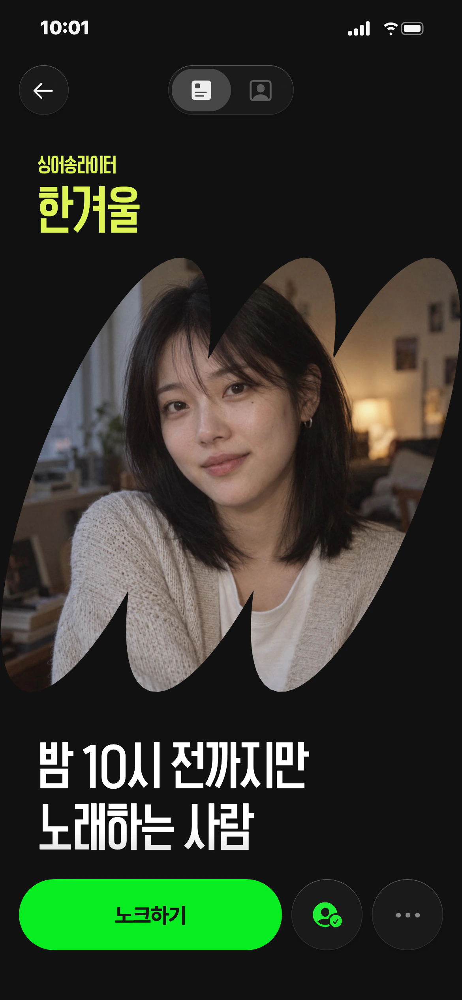
1 겨울 프로필 · 노크하기박현의 폰
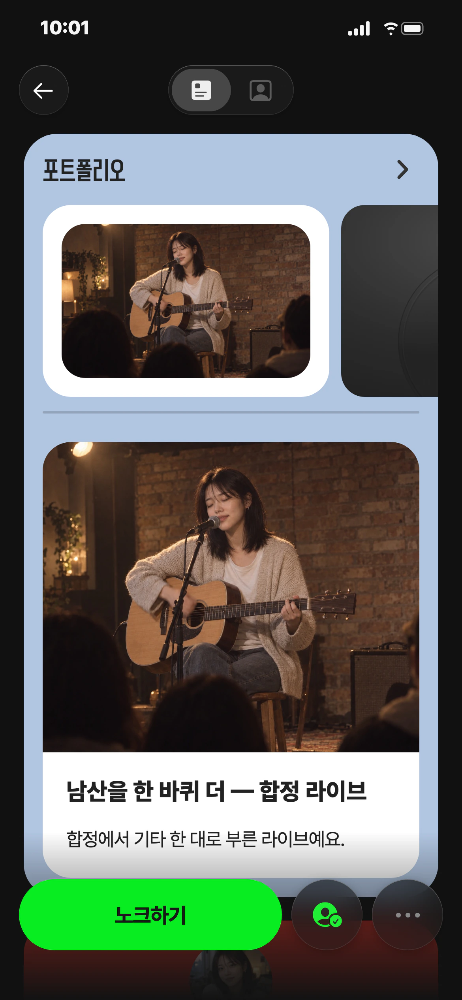
2 첫 칸의 합정 라이브박현의 폰
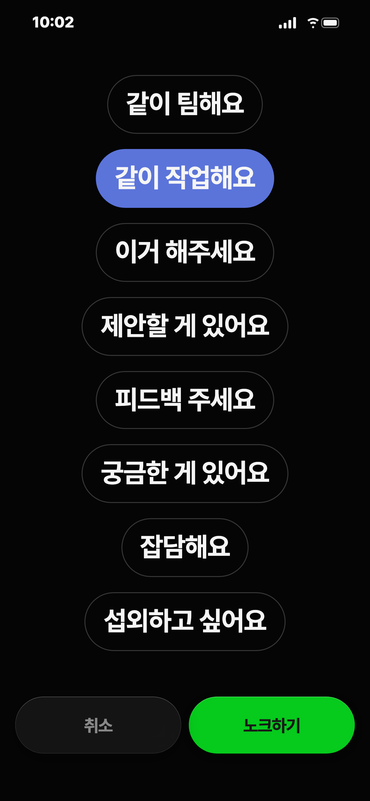
3 용건 '같이 작업해요'박현의 폰
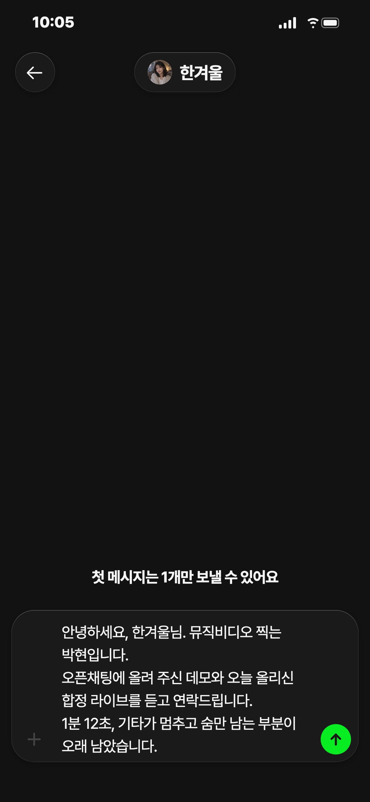
4 첫 메시지박현의 폰
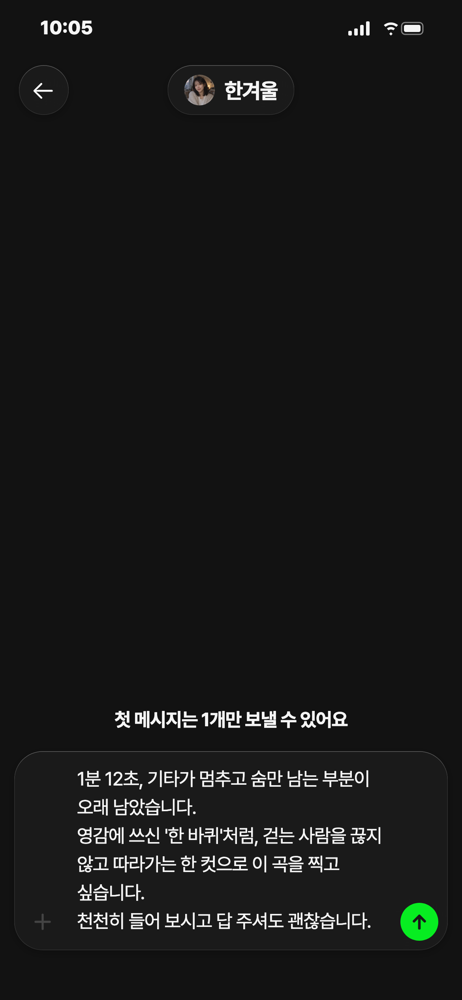
5 첫 메시지 · 끝부분박현의 폰
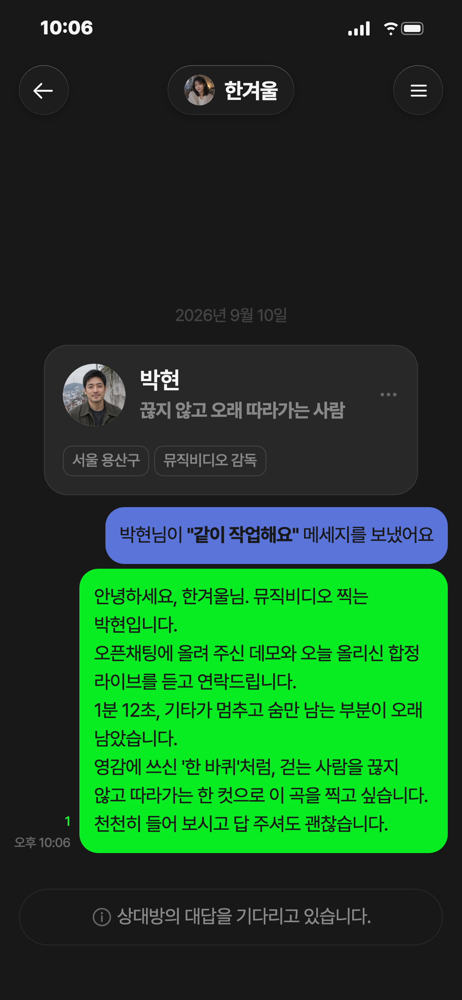
6 보냄 · 응답 대기박현의 폰7 받은 노크(1장과 같은 화면)한겨울의 폰
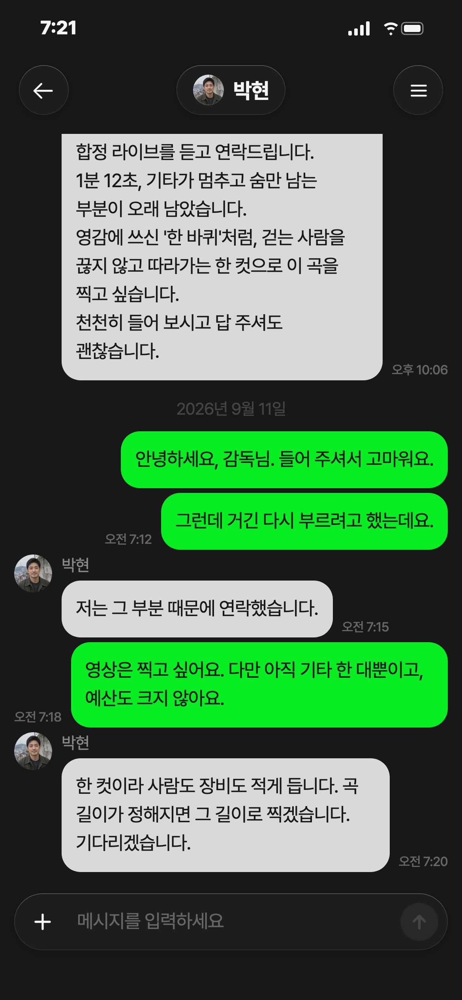
8 받아주기 뒤 대화한겨울의 폰
심는 것
P7파란 말풍선 받은 파란 '같이 작업해요' 말풍선 → 7장에서 회수받는 사람 → 보내는 사람
P16기다림 박현의 '기다리겠습니다' → 9장에서 회수기다리는 사람 → 맞춰 주는 사람
P20망설임 박현의 '천천히 들어 보시고 답 주셔도 괜찮습니다' → 7장에서 회수받는 사람의 망설임 → 보내는 사람의 망설임
회수하는 것
P6같은 화면 5장에서 같은 화면을 다시 봄 ← 1장에서 심음낯선 사람의 노크 → 들어 온 사람의 노크
이어 가는 것P1 영감 한 줄의 한 바퀴 · P3 그 숨 · P4 열어 둔 문 · P8 곡 길이 · P10 말수 적은 사람 · P11 소개 카드
다음 장면으로'기다리겠습니다' → 프로젝트 제목 입력
06
프로젝트 · 2막 진입 · 둘째 이야기
모집 글을 올리자 커버 디자이너가 지원했어요
밝은 장면 · 폰 한 대, 이름표 한겨울 → 서유진 → 한겨울 · 스크롤 420vh
아는 사람이 없을 때 모집 글로 필요한 사람을 찾고, 할 일을 찾는 쪽은 하는 일로 검색해 그 글에 닿으며, 누구와 할지는 모집한 사람이 정한다는 걸 보여요.
홈 카피
kicker
프로젝트 · 검색
제목
모집 글을 올리자 / 커버 디자이너가 지원했어요
부제
곡 길이부터 정해야 했던 겨울은 프로듀서와 커버 디자이너를 구하는 글을 열었어요. 첫 음악 커버를 찾던 서유진이 '앨범 커버'로 검색하다 그 글에 닿았어요.
단계 1
모집 글을 열어요 — 역할과 일정을 적어 두면 지원이 와요.
단계 2
하는 일로 찾아요 — '앨범 커버'로 검색해 맡을 일이 적힌 모집 글을 찾았어요.
단계 3
누구와 할지는 내가 정해요 — 지원서를 읽고 수락하면 같은 방에서 이야기해요.
끝 캡션
커버는 정해졌어요. 프로듀서 자리는 아직 비어 있었어요.
인물 행동
겨울: 올리기 → 프로젝트 → 제목·소개·대표 이미지(가사 종이 사진) → 등록. 유진: 클럽 검색 '앨범 커버' → 프로젝트 결과 → 모집 글 → 지원서. 겨울: 프로젝트 방의 지원자 배너 → 지원자 목록 → 유진 수락.
감정 변화
겨울 막막함 → 기대 / 유진 갈증 → 발견 → 용기 / 남은 빈자리의 초조
연출
폰 한 대에서 이름표만 바뀌어요. 모집·지원·수락은 서로 다른 사람의 화면이에요. 단계 목록 대신 지금 단계 한 줄과 그 순간의 날짜·시각(9.11 밤 9:40 → 9.12 오후 2:10 → 9.12 저녁 7:28)을 둬요.
폰 화면 순서 10컷
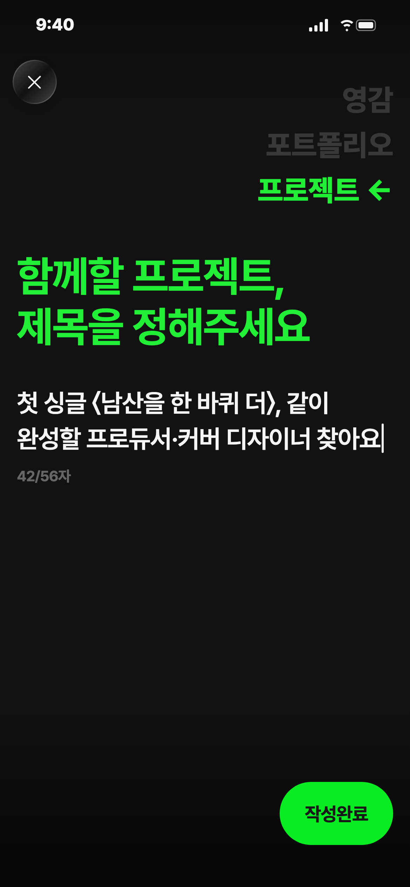
1 모집 글 제목한겨울의 폰
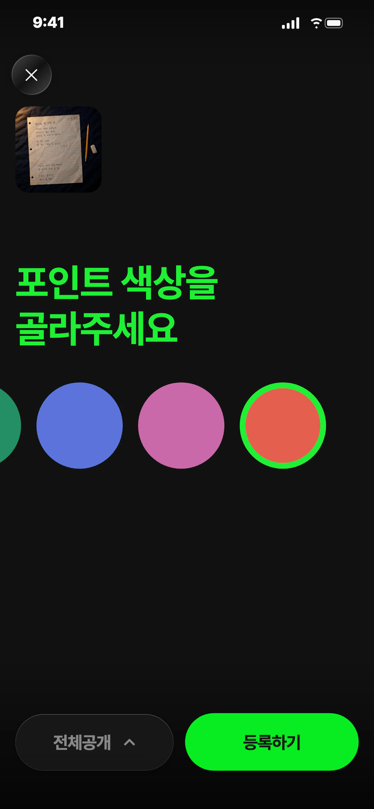
2 배경 가사 종이 · 포인트 색 · 등록하기한겨울의 폰
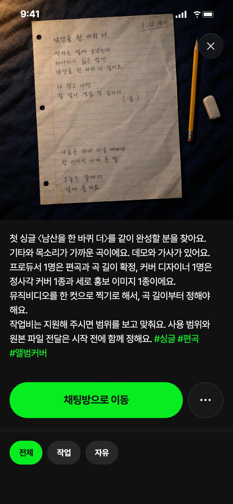
3 등록된 모집 글 · 역할과 일정한겨울의 폰
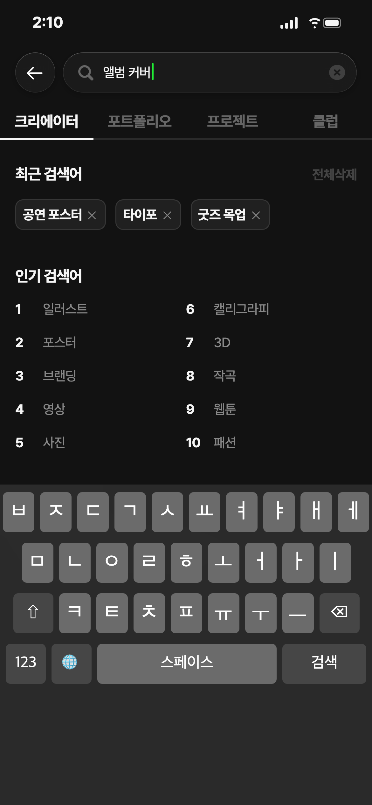
4 검색 '앨범 커버'서유진의 폰
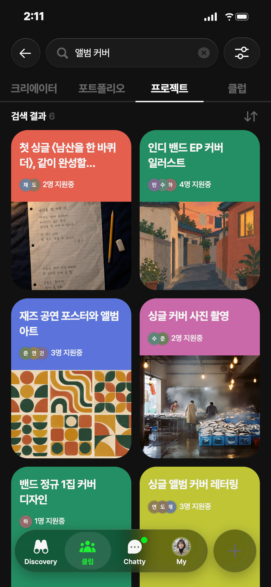
5 검색 결과 · 프로젝트서유진의 폰
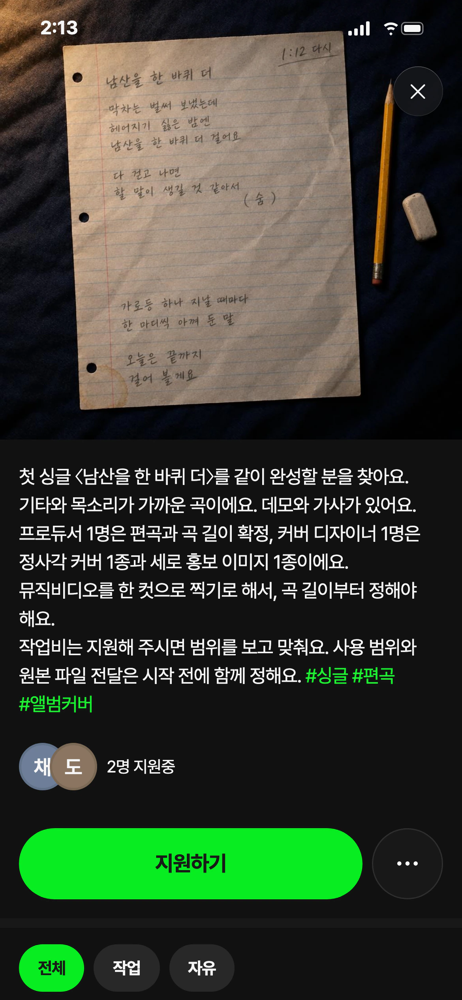
6 모집 글 상세서유진의 폰
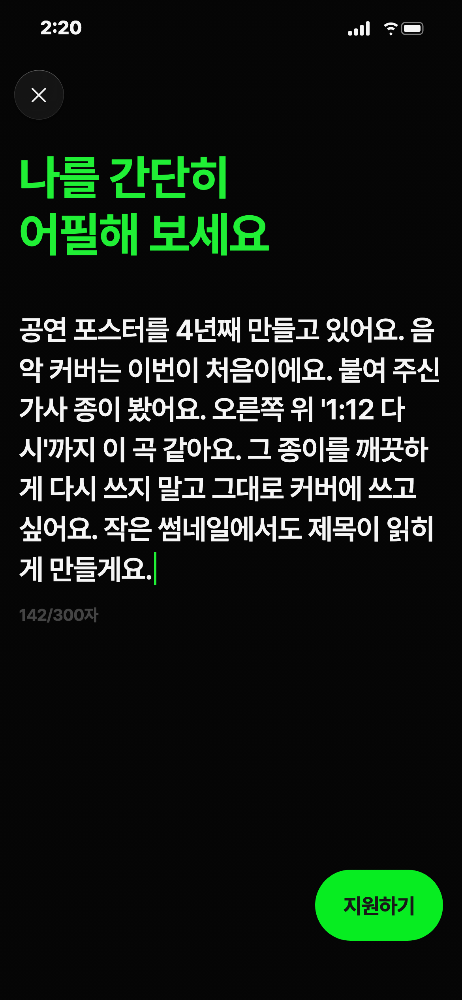
7 지원서서유진의 폰
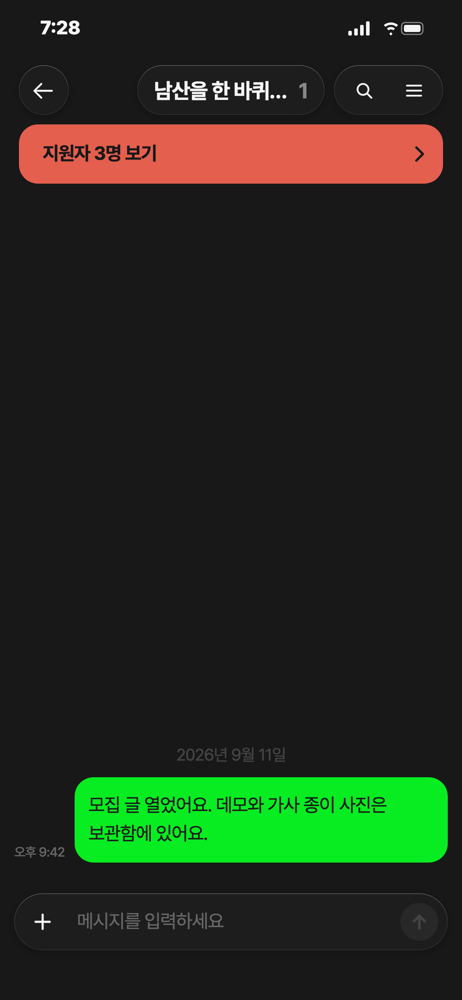
8 지원자 배너한겨울의 폰
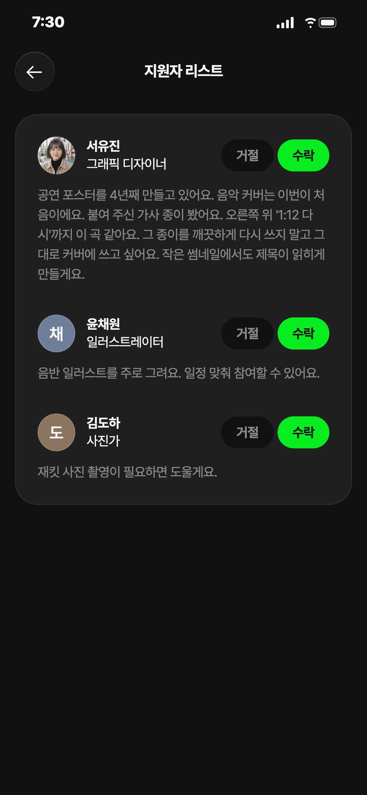
9 지원자 목록 · 수락한겨울의 폰
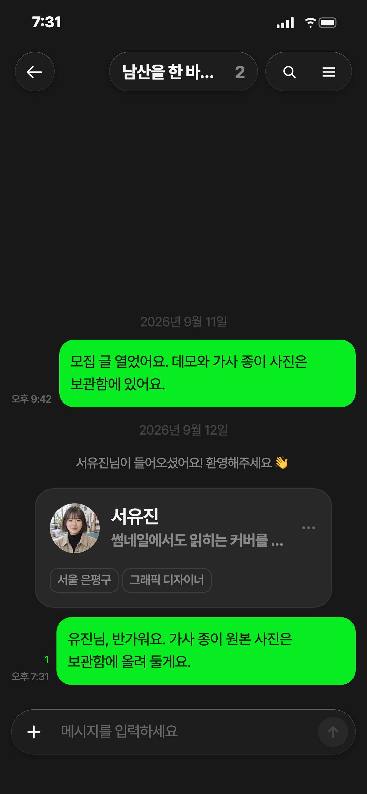
10 수락 뒤 프로젝트 방한겨울의 폰
심는 것
P19빈 프로듀서 자리 프로듀서 자리 0명 → 7, 8장에서 회수빈자리 → 먼저 두드려 채운 자리
회수하는 것
이 장면에서 회수하는 것은 없어요.
이어 가는 것P3 그 숨 · P8 곡 길이 · P12 가사 종이
다음 장면으로'프로듀서 자리는 아직 비어 있었어요' → 사흘 뒤 Shuffle!
07
셔플 · 변화의 첫 행동
받아 본 노크를 이번엔 먼저 보냈어요
어두운 장면 · 폰 한 대 + 폰 밖 키워드 낙하 · 스크롤 380vh
무엇을 찾을지 모를 때 셔플이 사람을 데려오는 방식, 그리고 '받아 본 노크를 이번엔 먼저 보내는' 겨울의 첫 변화를 보여요.
홈 카피
kicker
셔플 · 영감 · 노크
제목
받아 본 노크를 / 이번엔 먼저 보냈어요
부제
모집 글을 연 지 사흘, 프로듀서 자리는 아직 비어 있었어요. 셔플에서 '작곡'을 눌러 들어가 보니, 후렴 앞을 비워 둔 윤태오의 트랙이 귀에 걸렸어요.
보조
끌리는 키워드를 누르면 그 분야로 들어가요.
속말
말 걸어도 되려나?
인물 행동
Shuffle! → 키워드 낙하 → '작곡' → 모인 사람 가운데 윤태오 → 웹드라마 엔딩곡 트랙을 듣고 영감 한 줄을 읽음 → 노크하기, '같이 작업해요' → 첫 메시지 → 태오가 받아주고 답장 → 모집 글 지원·수락.
감정 변화
초조 → 끌림 → 긴장 → 설렘
연출
셔플 구간에 C8 웹의 키워드 낙하를 화면 가득 크게. 첫 노크를 쓰는 화면은 5장 박현의 보내는 폰과 같은 자리·구도에 둬서 보내는 사람이 겨울로 바뀐 걸 보여요.
폰 화면 순서 10컷
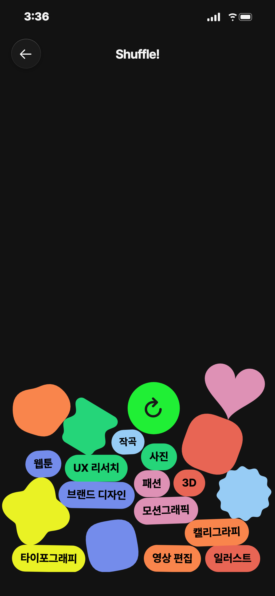
1 Shuffle! 키워드한겨울의 폰
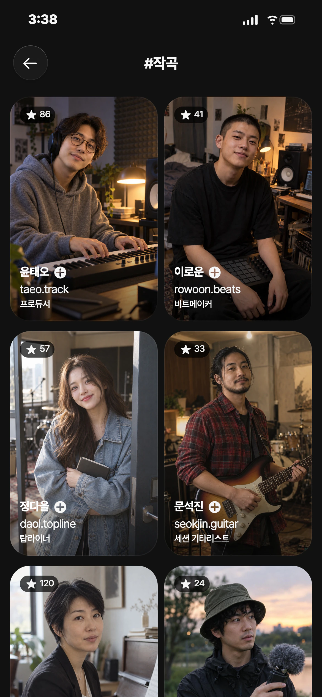
2 '#작곡' 크리에이터한겨울의 폰
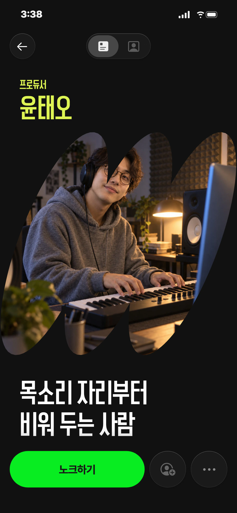
3 태오의 웹 프로필한겨울의 폰4 첫 칸의 엔딩곡 트랙한겨울의 폰5 엔딩곡 트랙 · 재생 중 0:58한겨울의 폰6 태오의 영감한겨울의 폰7 겨울의 첫 노크 · 앞부분한겨울의 폰8 겨울의 첫 노크 · 끝부분한겨울의 폰9 받은 노크윤태오의 폰10 받아주기 뒤 대화한겨울의 폰
심는 것
이 장면에서 새로 심는 것은 없어요.
회수하는 것
P7파란 말풍선 같은 말풍선을 겨울이 보냄 ← 5장에서 심음받는 사람 → 보내는 사람
P11소개 카드 겨울의 카드가 태오에게 감 ← 3장에서 심음나를 먼저 보여 주는 카드가 양쪽으로 오감
P19빈 프로듀서 자리 모집 2/2, 프로젝트 방 멤버 3 ← 6장에서 심음빈자리 → 먼저 두드려 채운 자리
P20망설임 겨울의 속말 '말 걸어도 되려나?' ← 5장에서 심음받는 사람의 망설임 → 보내는 사람의 망설임
이어 가는 것P3 그 숨 · P8 곡 길이
다음 장면으로'첫 파일은 주말에 올릴게요' → 프로젝트 방의 v04 파일
08
두 개의 방 · 중간점 → 작은 상실 · 어두운 밤
두 사람 사이에서 파일만 나르고 있었어요
밝은 장면 · 폰 한 대가 좌우 파형 띠 사이를 오감, 배경이 새벽으로 어두워짐 · 스크롤 320vh
1:1로 시작한 협업은 방이 늘고, 그러면 버전과 길이가 엇갈린다는 문제를 사람의 방식(혼자 나르기)에서 나온 갈등으로 보여요. 앱 고장은 없어요.
홈 카피
kicker
Chatty · 보관함
제목
두 사람 사이에서 / 파일만 나르고 있었어요
부제
태오의 새 버전은 3분 12초, 박현이 걸어 둔 동선은 2분 48초에 맞춰져 있었어요. 두 사람은 아직 서로 말 한 번 안 해 봤고요.
프로젝트 방에서 v04 받기 → 박현과의 방에서 동선 테스트 받기 → 길이와 숨의 자리가 다르다는 걸 알고 v04를 박현에게 옮겨 보내고 말을 전함 → 두 번 왕복하다 멈춤 → 같은 문장을 두 방에 보냄.
감정 변화
기대 → 혼란 → 외로움(새벽 2시 10분) → 결심
연출
폰 한 대가 왼쪽 파형(프로젝트 방)과 오른쪽 파형(박현) 사이를 오가요. 숨 표식이 서로 다른 자리에서 어긋나 보이고, 페이지 배경만 새벽으로 어두워져요.
폰 화면 순서 5컷
1 프로젝트 방 · v04 3:12한겨울의 폰2 보관함 · 길이 엇갈림한겨울의 폰3 박현과의 방 · 동선 2:48한겨울의 폰4 새벽 2:10 · 프로젝트 방한겨울의 폰5 새벽 2:10 · 박현과의 방한겨울의 폰
심는 것
P9TF 'TF처럼요' → 13장에서 회수임시 → 지속
회수하는 것
P8곡 길이 v04 3:12와 동선 2:48 → 3:12 하나 → 뮤직비디오 3:12 ← 2, 4장에서 심음혼자 매기던 번호 → 넷이 합의한 길이
P19빈 프로듀서 자리 모집 2/2, 프로젝트 방 멤버 3 ← 6장에서 심음빈자리 → 먼저 두드려 채운 자리
이어 가는 것P3 그 숨
다음 장면으로두 방의 같은 문장 'TF처럼요' → 팀 만들기
09
팀 · 3막 진입
방 두 개를 팀 하나로
어두운 장면 · 가운데 폰과 카드 두 장 · 스크롤 320vh
팀이 '팀원 전용 채팅방 하나와 팀 프로필, 누구나 올리는 팀 포트폴리오'라는 걸 겨울의 결정과 수락으로 보여요. 들어갈지는 받는 사람이 정해요.
홈 카피
kicker
팀
제목
방 두 개를 / 팀 하나로
부제
팀을 만들면 팀원끼리 쓰는 채팅방이 같이 생겨요. 처음으로 네 사람이 한 방에서 얘기했어요.
카드 1
초대를 받으면 / 들어갈지는 내가 정해요 — 수락하면 그 팀도 팔로우돼요.
카드 2
팀 작업은 / 팀 프로필에 모여요 — 팀원 누구나 팀 포트폴리오에 올릴 수 있어요.
대사 자막
"그 숨은 다시 안 부를게요. 남길게요." — 한겨울
인물 행동
겨울: 팀 만들기(이름·소개·이미지) → '최근 대화한 크리에이터'에서 박현·윤태오·서유진 초대. 박현: 팀 초대 요청 수락 → 확인창 '수락하기'. 넷: 팀 채팅. 겨울: 팀 게시판에 촬영 일정.
감정 변화
긴장 → 안도 → 웃음 → 결정('남길게요')
연출
8장의 두 길이가 하나로 정해져요. '음원 3:12 고정, 숨 1:36'은 겨울의 인용 아래 한 줄로 묶어요. 양옆 카드 대신 지금 단계 한 줄만 폰 아래에 둬요.
폰 화면 순서 6컷
1 팀 만들기한겨울의 폰2 멤버 초대한겨울의 폰3 팀 초대 요청박현의 폰4 수락 확인박현의 폰5 팀 채팅 · 네 사람한겨울의 폰6 게시판 · 촬영 일정한겨울의 폰
심는 것
이 장면에서 새로 심는 것은 없어요.
회수하는 것
P3그 숨 '남길게요'와 종이의 '남기기', '그 숨, 그대로 있네요', '이번 숨은 처음부터' ← 2, 3장에서 심음지우려던 흠 → 연락의 이유 → 넷의 공통 언어 → 작품의 얼굴 → 다음 곡의 출발점
P8곡 길이 v04 3:12와 동선 2:48 → 3:12 하나 → 뮤직비디오 3:12 ← 2, 4장에서 심음혼자 매기던 번호 → 넷이 합의한 길이
P10말수 적은 사람 '동선을 다시 짜겠습니다', 크레딧 맨 앞 ← 3장에서 심음듣던 사람 → 말 거는 사람 → 팀을 붙잡는 사람
P16기다림 '3분 12초에 맞춰 동선을 다시 짜겠습니다' ← 5장에서 심음기다리는 사람 → 맞춰 주는 사람
이어 가는 것P2 밤 10시 · P9 TF · P12 가사 종이
다음 장면으로게시판 '9/27 밤 11시 남산' → 남산 사진
10
미친 사람들 · 피날레 · 주제 증명
한 곡에 네 사람의 이름이 남았어요
어두운 장면 · 독립 사진 → 폰 한 대 순환 → 브랜드 프레임(폰 없음) · 스크롤 사진 + 380vh + 320vh
절정(끊지 않은 3분 12초)을 사진으로 열고, 그 결과가 한 사람의 성공담이 아니라 네 사람 각자의 대표작으로 남는다는 걸 폰 안에서 보인 뒤, C8의 선언으로 넓혀요.
홈 카피
사진 캡션
9월 27일 밤 11시 40분 · 일곱 번째 테이크
이야기 제목
한 곡에 / 네 사람의 이름이 남았어요
이야기 부제
10월 둘째 주 목요일, 박현이 뮤직비디오를 팀 포트폴리오에 올렸어요. 각자 자기 몫은 자기 프로필에도 올렸어요.
대사 자막
"그 숨, 그대로 있네요." — 옷장보컬
제목
미쳤다는 말이 / 칭찬인 곳
단어 리빌
좋아하는 일에 미쳐 본 적 있다면 / 여기선 다들 같은 편이에요
이음 문구
나를 알아보는 무대가 없었나요?
CTA
앱 받고 입장하기
인물 행동
(사진) 박현이 짐벌을 들고 뒷걸음질, 겨울이 플레이백에 맞춰 걸으며 노래, 태오가 휴대 스피커로 3:12 플레이백, 유진이 테이크 사이 세로 사진. (폰) 10월 8일 박현이 뮤직비디오를 팀 포트폴리오에 올림 → 참여자 넷 → 각자 자기 몫을 자기 포트폴리오에 직접 올림 → 겨울이 오픈채팅에 다시 들러 소식을 남김.
감정 변화
숨죽임(일곱 번째 테이크) → 해방 → 자부심 → 소속감
연출
키워드 낙하로 '싱어송라이터·프로듀서·뮤직비디오 감독·그래픽 디자이너'가 네 이름 위에 쌓이고, 다른 분야 키워드가 이어서 쏟아져 화면이 넓어져요. 기존 홈의 로고 묶음과 '문화와 콘텐츠에 미친 사람들'의 '미친' 위에 초록 X 두 개를 긋는 장난, 작곡가 프로필 목업(기존 홈 원본의 화면만 평면으로 편 것, 색 보정 없음 · 네 사람의 폰과 다른 얇은 틀)으로 닫아요.
폰 없는 독립 사진 · 남산 산책로, 밤 11시 40분. 걸으며 노래하는 겨울, 뒷걸음질하는 박현, 스피커를 든 태오, 필름 카메라를 든 유진.
폰 화면 순서 7컷
1 팀 작업 · 뮤직비디오박현의 폰2 참여자 네 사람박현의 폰3 겨울의 프로필 · 완성곡방문자 시점4 태오의 프로필 · 편곡방문자 시점5 박현의 프로필 · 뮤직비디오방문자 시점6 유진의 프로필 · 커버방문자 시점7 오픈채팅 · 10월 8일한겨울의 폰
심는 것
이 장면에서 새로 심는 것은 없어요.
회수하는 것
P1영감 한 줄의 한 바퀴 끊지 않은 3분 12초 ← 2장에서 심음혼잣말 → 촬영 계획 → 완성된 한 컷
P2밤 10시 밤 11시 40분의 촬영, '드디어 10시 넘겼네요', 그대로인 한 줄 소개 ← 2, 3장에서 심음제약 → 팀이 노래를 방 밖으로 데리고 나감 → 그래도 그녀는 그녀
P3그 숨 '남길게요'와 종이의 '남기기', '그 숨, 그대로 있네요', '이번 숨은 처음부터' ← 2, 3장에서 심음지우려던 흠 → 연락의 이유 → 넷의 공통 언어 → 작품의 얼굴 → 다음 곡의 출발점
P8곡 길이 v04 3:12와 동선 2:48 → 3:12 하나 → 뮤직비디오 3:12 ← 2, 4장에서 심음혼자 매기던 번호 → 넷이 합의한 길이
P10말수 적은 사람 '동선을 다시 짜겠습니다', 크레딧 맨 앞 ← 3장에서 심음듣던 사람 → 말 거는 사람 → 팀을 붙잡는 사람
P12가사 종이 가사 종이로 만든 싱글 커버 ← 2장에서 심음빈 얼굴 → 고친 흔적으로 만든 얼굴
P17목요일 습관 10월 8일 공개, 다음 달 둘째 주 목요일 ← 2, 4장에서 심음혼자 하던 습관 → 첫 완성 → 같은 습관, 다른 처지
P18처음 알아본 사람 '그 숨, 그대로 있네요' ← 3장에서 심음흘려들은 칭찬 → 지킨 것을 알아봐 준 사람
다음 장면으로'나를 알아보는 무대가 없었나요?' → 겨울의 반응 알림
11
Weekly Best · 코다
따로 신청하지 않아도 뽐내기만 하면 돼요
밝은 장면 · 카드 둘과 폰 한 대 · 스크롤 260vh
따로 신청하지 않아도 전체공개 작업과 받은 리스펙트로 참여한다는 규칙을, 2장에서 고른 '전체공개'의 결과로 보여요. 1등 성공담이 아니에요.
홈 카피
kicker
Weekly Best
제목
따로 신청하지 않아도 / 뽐내기만 하면 돼요
부제
공개한 다음 주, 처음 보는 이름들의 리스펙트가 쌓였어요. 평소처럼 올리고 활동하면 이미 참여한 거예요.
속말
신청한 적 없는데?
카드
작품 부문 — 전체공개 작업이 받은 리스펙트로 뽑혀요. / 크리에이터 부문 — 여기서 해 온 활동을 보고 골라요.
인물 행동
겨울의 폰에 처음 보는 이름들의 리스펙트 알림이 쌓여요 → 크리에이터 탭 → 작품 탭 4위.
감정 변화
무심 → 가벼운 놀람과 웃음
연출
사진·트로피·시상식 연출 없이 밝은 바탕에서 숨을 골라요. 마지막은 작품 목록 4위에 오른 겨울의 곡이에요. 운영 규칙 화면은 작은 글씨라 빼고, 폰 아래 한 줄(신청은 따로 없어요)로 대신해요.
폰 화면 순서 3컷
1 처음 보는 이름들의 리스펙트한겨울의 폰2 크리에이터 탭한겨울의 폰3 작품 탭 · 4위 〈남산을 한 바퀴 더〉한겨울의 폰
심는 것
이 장면에서 새로 심는 것은 없어요.
회수하는 것
P5공개 범위 Weekly Best 작품 부문의 조건 ← 2장에서 심음작은 선택 → 발견 → 무대
P12가사 종이 가사 종이로 만든 싱글 커버 ← 2장에서 심음빈 얼굴 → 고친 흔적으로 만든 얼굴
P15리스펙트 처음 보는 이름들의 리스펙트, 작품 부문 ← 4장에서 심음한 사람의 응원 → 여러 사람의 응원
다음 장면으로작품 4위 · 신청은 따로 없어요 → 질문 목록
12
질문 · 코다
시작 전에 미리 답해 둘게요
밝은 장면 · 펼침 목록 · 스크롤 일반 흐름
이야기를 보며 생긴 질문에 확정된 사실로만 답해요. 기대를 정직하게 맞춰요.
홈 카피
제목
시작 전에 / 미리 답해 둘게요
Q1
데모도 올려도 돼요? — 포트폴리오에 오디오로 올려요. 데모도, 완성곡도요.
Q2
노크는 DM이랑 뭐가 달라요? — 상대가 받아줘야 대화가 열려요. 노크엔 내 소개 카드와 첫 메시지가 같이 가요. 노크를 아예 안 받게 해 둘 수도 있어요.
Q3
팀엔 어떻게 들어가요? — 팀 관리자가 보낸 초대를 수락하면 들어가요. 수락하면 팀 채팅이 생기고, 그 팀도 팔로우돼요.
Q4
내 작업은 누가 봐요? — 작업을 올릴 때마다 공개 범위를 골라요. 일촌에게만 보이게 하거나 나만 볼 수도 있어요.
Q5
일이 들어오나요? — 일을 연결해 주거나 보장하지는 않아요. 다만 내 작업을 본 누군가가 노크로 먼저 말을 걸어올 수는 있어요.
끝줄
여기 없는 질문은 → 문의하기
인물 행동
(방문자의 몫) 질문을 펼쳐 답을 봐요. 질문 2를 펼칠 때만 노크 수신 설정 화면이 나와요.
감정 변화
망설임 → 안심
연출
질문을 펼치면 답이 열려요. 사진·폰 연출은 질문 2의 한 컷뿐이에요.
폰 화면 순서 1컷
1 노크 수신 설정한겨울의 폰
심는 것
이 장면에서 새로 심는 것은 없어요.
회수하는 것
P4열어 둔 문 질문 2 '노크를 아예 안 받게 해 둘 수도 있어요' ← 2장에서 심음신경 쓴 적 없는 기본값 → 열려 있던 문 → 내가 고르는 문
다음 장면으로마지막 답 '노크로 먼저 말을 걸어올 수는 있어요' → 검은 바탕의 프로필
13
한 장 · 마지막 이미지
올린 작업부터 함께한 팀까지 한 장으로
어두운 장면 · 검은 바탕, 폰 한 대와 슬로건 · 스크롤 280vh
2장과 같은 행동(둘째 주 목요일 밤에 데모 하나 올리기)과 같은 화면(내 프로필)으로 무엇이 달라졌는지 보여 주고, 1장 제목을 슬로건으로 되받아 닫아요.
홈 카피
시간 표지
다음 달 둘째 주 목요일 밤
이야기의 마지막 줄
지우려던 숨은 이제 / 처음부터 남겨요
슬로건
올린 작업부터 / 함께한 팀까지 / 한 장으로
서명
크리에이터클럽
CTA
앱 다운로드
인물 행동
〈막차를 한 번 미루고〉 데모 v02를 올리고 프로필을 봐요 → 소속 팀 줄을 눌러 팀 포트폴리오로 → 팀 소개 탭에 바뀐 소개 한 줄.
감정 변화
여운 → 다음에 대한 기대
연출
슬로건 줄이 밝아질 때 폰 안 프로필이 2장 상태에서 지금 상태로 한 번 바뀌어요. 전후 비교는 폰 안에서만 해요. 숨 표식이 처음부터 그대로인 다음 데모의 파형 띠.
폰 화면 순서 6컷
1 처음의 포트폴리오(2장)한겨울의 폰2 다음 데모 뒤 프로필한겨울의 폰3 완성 싱글 · 크레딧한겨울의 폰4 소속 팀 · 남산 한 바퀴한겨울의 폰5 팀 포트폴리오한겨울의 폰6 팀 소개 · 'TF였어요'한겨울의 폰
심는 것
이 장면에서 새로 심는 것은 없어요.
회수하는 것
P2밤 10시 밤 11시 40분의 촬영, '드디어 10시 넘겼네요', 그대로인 한 줄 소개 ← 2, 3장에서 심음제약 → 팀이 노래를 방 밖으로 데리고 나감 → 그래도 그녀는 그녀
P3그 숨 '남길게요'와 종이의 '남기기', '그 숨, 그대로 있네요', '이번 숨은 처음부터' ← 2, 3장에서 심음지우려던 흠 → 연락의 이유 → 넷의 공통 언어 → 작품의 얼굴 → 다음 곡의 출발점
P9TF 팀 소개 'TF였어요. 아직 해체 안 했어요.' ← 8장에서 심음임시 → 지속
P12가사 종이 가사 종이로 만든 싱글 커버 ← 2장에서 심음빈 얼굴 → 고친 흔적으로 만든 얼굴
P13처음의 프로필 다음 데모·완성곡·뮤직비디오·소속 팀 ← 2장에서 심음같은 화면, 달라진 한 장
P14올려 둔 → 올린 '올린 작업부터' ← 1장에서 심음처음과 끝이 맞물림
P17목요일 습관 10월 8일 공개, 다음 달 둘째 주 목요일 ← 2, 4장에서 심음혼자 하던 습관 → 첫 완성 → 같은 습관, 다른 처지
끝회수만 하고 닫아요. 마지막은 앱 다운로드예요.
셋업 → 페이오프
같은 소품이 돌아올 때 뜻이 바뀌어요
ID
심는 것
회수
뜻의 변화
P1
영감 한 줄의 한 바퀴 영감 '남산을 한 바퀴 더…' (2장)
끊지 않은 3분 12초 (10장)
혼잣말 → 촬영 계획 → 완성된 한 컷
P2
밤 10시 '밤 10시 전까지만', 9시 52분의 녹음과 오픈채팅 질문 (2, 3장)
밤 11시 40분의 촬영, '드디어 10시 넘겼네요', 그대로인 한 줄 소개 (10, 13장)
제약 → 팀이 노래를 방 밖으로 데리고 나감 → 그래도 그녀는 그녀
P3
그 숨 가사 종이의 '1:12 다시', 옷장보컬의 칭찬과 '다시 녹음하려고요' (2, 3장)